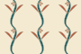
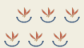
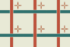
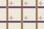
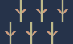
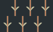
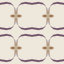
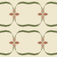

O001 · Mirrored flowering vine



A two-part curved stem carries broad leaves and tiny spine veins. The entire sprig is mirrored between columns.
Inspect the frame, repeated segment and native construction →Gojo · native ornament composition
Curved paths become bounded bands, leaves and petals. Larger segments repeat, reflect and turn through a shared construction frame. Two colour readings bring different levels of the same ornament forward.
Colour distinguishes the frame, ground, bands and accents. It expresses a selected design intention, rather than a yes/no verdict or a guaranteed perceptual effect.

A two-part curved stem carries broad leaves and tiny spine veins. The entire sprig is mirrored between columns.
Inspect the frame, repeated segment and native construction →Mirrored curved half-arches define an ogee compartment, enclosing a separate radial flower and paired leaves.
Inspect the frame, repeated segment and native construction →
One pointed leaf and its mirror become a lotus. Its complete compound repeats over a diamond construction frame.
Inspect the frame, repeated segment and native construction →Four real quarter-turn applications form a four-lobed ribbon arrangement; small flowers occupy the intermediate compartments. Coincident copies remain separate sites.
Inspect the frame, repeated segment and native construction →A compound fan of broad curved leaves is reflected as a unit, over a quiet square course.
Inspect the frame, repeated segment and native construction →Chamfered frame corners, curved leaves and a fourfold centre share one compound unit. Small interstitial squares belong to the disposition.
Inspect the frame, repeated segment and native construction →A rounded arch and three broad leaves form a shell-like unit. Alternating row drop changes the larger grouping.
Inspect the frame, repeated segment and native construction →Angular meanders remain actual occupied bands. Curved leaves occupy the compartment rather than being scattered along the line.
Inspect the frame, repeated segment and native construction →

Independent continuous ribbons carry explicit straight-crossing order. The flower is a sibling unit anchored to that same repeating frame.
Inspect the frame, repeated segment and native construction →A diamond ribbon and a curled sprig are repeated together. The broad leaves follow the diagonal frame instead of obscuring its disposition.
Inspect the frame, repeated segment and native construction →A large pointed body is a tapered band with explicit occupied support. Paired curved tendrils and a small crown articulate its interior.
Inspect the frame, repeated segment and native construction →The diagonal crossing is certified on straight source sections; curved buds decorate its compartments without supplying the crossing evidence.
Inspect the frame, repeated segment and native construction →Two distinct petal constructions form a wedge; the entire wedge repeats by quarter turns before the medallion repeats on the field.
Inspect the frame, repeated segment and native construction →

A large two-leaf sprig is mirrored and shifted as a compound. Its diagonal limbs share a narrow parent stem.
Inspect the frame, repeated segment and native construction →A lobed arch is a compound of three curved segments. Drop repeats create a second reading of the same course.
Inspect the frame, repeated segment and native construction →

An S-scroll and its reflected partner make one reusable compartment. A fourfold flower and narrow inner veins complete the intermediate layer.
Inspect the frame, repeated segment and native construction →